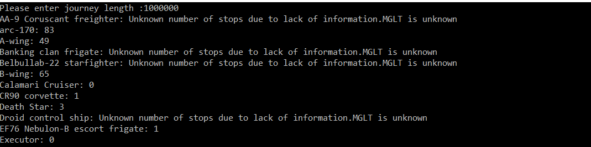
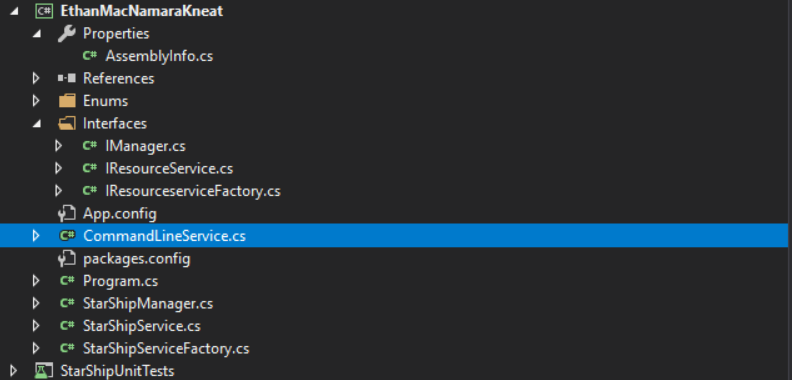

Documentation
Introduction
The aim of this document is to briefly breakdown the usage of the program and give an overview of the classes involved
More information for the SWAPI can be found at @
https://swapi.co/documentation
More information for the SharpTrooper Helper Library used can be found at @
https://github.com/olcay/SharpTrooper
For more More information about each class and its methods see code comments
How to run program
Navigate to the release folder and double click the exe file.
When the cmd window opens a prompt asking to enter the journey length is shown or type help for more information.
If a valid number is entered the program will display a list of ships along with the stops needed to restock supplies.
*Note: For Starships that didnt have a known MGLT value a message is shown informing the user the calculation couldnt be completed
HELP is entered more information about the program and its options is given
EXIT will kill the program
Staging
: for hot fixes and final hardening of a release
Successful Result
Fig 1 shows an example of a section of a successful result

Fig 1 .Source tree Creating a branch.
Project Structure
The Basic Structure of the Project is shown in Fig2.These are summarised below.StarShipManager and StarShipService will be covered in more detail as they are the most complex areas.

Fig 2.Project Structure
Enums
:Holds the classes responsible for holding s used in the program such as hours in a day or the state resulting from a usersInput.
Interfaces
: Classes used to increase code reusability incase we want to expand out from Starships sometime in the future
CommandLineService
: Responsible for the reading and writing of data to the command line.
StarShipManager:
The core class of the Project that initalises the program and pulls in all the services needed to run program
StarShipService
Service for the starship.It is responsible for getting the list of starships,converting input durations to useable values and thecalculation of the number of restock stops needed
StarShipServiceFactory
: Used to create an instance of starship factory(Encapsulates creation of service)
StarShipUnitTests
: Unit tests for the main functions in the project
StarShipService
getAllResource()
Implements IResourceService ->Leverages SharpTrooper Helper library to retrieve all starships.Swapi only returns one page at a time so several calls had to be made in order to retrieve all ships:Returns List of StartShips
hoursFromTimeDurationDesc(string consumablesDuration)
->takes the consumables length description such as '2 Months' and returns number of hours in that description.NOTE:For this implementation a month = 30 days : Returns int hours
calStopsForJourney(int journeylength,int perHourSpeed,string consumablesDuration(int journeylength,int perHourSpeed,string consumablesDuration)
-> Calculates number of restock stops needed for a ship of max per hour speed = perHourSpeed to cover MGLT distance = journeylength : Returns int number of stops
noStopsForShips(int journeyLength,List
starships)
-> :Returns a Dictionary of shipName ,refuelStops that a ship will need to cover the given distance :
StarShipManager
init()
->Gets the StarShip List
Run()
->Intializes and manages the System loop.The flow of the loop is as follows
Waits for input from the user
The Input is parsed into one of 4 states: VALIDNUMBER will start the calculation of Starships stops need,HELP will display more info to the user,CLEAR will clear the command window,EXIT will exit the program and INVALID will inform the user to try again
PrintHelp()
-> Prints the Help message
PrintResult(Dictionary
starShipStops)
-> Prints the StarShip Dictionary contents
ParseUserInput(string input)
-> Takes a string Input and decides its state VALIDNUMBER,HELP,CLEAR,EXIT or DEFAULT(taken as INVALID)
Notes
The values used in this project were Int32.
Some of the interfaces or Services may seem trivial but I was thinking along the lines of if the project were to expand.It was also to show off some of the code practices I have learned